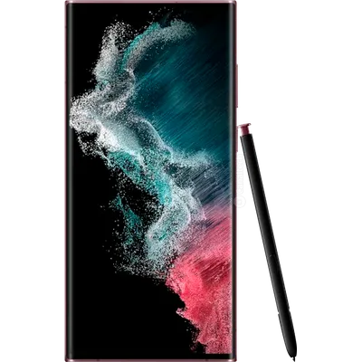
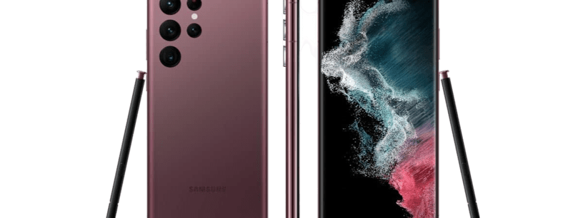

Samsung Galaxy S22 Ultra O Galaxy S22 Ultra deve ser o próximo flagship da Samsung, em que podemos esperar o melhor hardware e as configurações mais avançadas. Há rumores apontando que ele também pode receber o nome de Galaxy 22 Note, já que contará com suporte à S Pen. Outro ponto que reforça essa ideia é o design do aparelho, que provavelmente adotará linhas mais retas (inclusive a tela) e um minimalismo nos traços. Além disso, alguns vazamentos indicam um acabamento ainda mais refinado do que os irmãos menores. Algumas certificações homologadas pela Anatel confirmam que a bateria do Galaxy S22 deverá ser próxima de 5.000 mAh, o que pode não ser um grande upgrade em relação ao Galaxy S21 Ultra. Seu lançamento é esperado para o começo de 2022 juntamente com os outros modelos da linha.
 